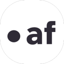
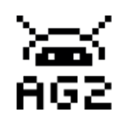
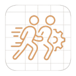
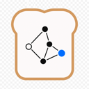

New AI agent tools
616 tools added in the last 30 days, newest first. Every link is checked when it is added.
This week · 616 tools
Oct 16, 2026 · 522 tools
SODAX SDK
Cross-network DeFi execution SDK (swaps, lending, bridging) with skills and a Builders MCP for AI-assisted…
Openfort
Open-source stablecoin wallet infrastructure with policy-gated agent wallets, gas sponsorship and x402…
Nora
Deep-reasoning AI coding agent for building and securing Web3 apps and smart contracts.
Marx Finance
Open platform where autonomous AI trading agents publish market signals and debate positions, with an MCP…
Sharpe Labs
Free crypto trading intelligence terminal (derivatives, funding, on-chain, sentiment) with an MCP server for…
blai
AI crypto advisor app to research tokens, build portfolios and trade via chat.
Fere AI
Fund a ready-made AI agent and it trades crypto (and Polymarket) for you 24/7.
Laika AI
Web3 browser extension for AI research, token and contract analysis, wallet monitoring and phishing detection.
Dataline
Turns natural-language intent into structured, confidence-scored Web3 market data for AI agents (formerly…
Chainaware
AI wallet auditor, fraud and rug-pull detector with a prediction MCP server for agents.
OneClick
AI recommendation engine that builds a personalized DeFi yield portfolio from your wallet history and risk…
Magia Trade
No-code visual strategy lab with AI agents that send signals and deploy live trading on Binance and B3.
MiDash AI
Conversational AI trading copilot that turns plain-language strategies into backtested, broker-executed…
Hedera AI Studio
Open-source toolkit (Agent Kit, MCP server) for building verifiable AI agents on Hedera.
Binance Agent OS
Binance developer platform connecting AI agents to trading, market data, Agentic Wallet, x402 payments and…
Sherlock AI
Sherlock's AI auditor for smart-contract vulnerabilities.
Octane
Agentic security analysis that finds exploitable vulnerabilities in mission-critical code, including DeFi…
Almanax
AI security agent that finds vulnerabilities in smart contracts.
BICScan MCP
AhnLab's MCP server for BICScan risk scores of blockchain addresses and domains.
EVM MCP Server
Open-source MCP server for reading and transacting on 30+ EVM chains.
CoinGecko MCP Server
Official MCP server for crypto prices, market and on-chain data.
Alchemy MCP Server
Official MCP server exposing Alchemy's multi-chain blockchain APIs to agents.
Blockscope
AI on-chain investigator that decodes transactions, profiles wallets and traces stolen funds across 8 chains.
ChainGPT
Suite of crypto AI tools: chatbot, smart-contract generator and auditor.
Nansen AI
On-chain analytics with an AI agent that researches tokens and wallets and can execute trades, powered by…
aixbt
Autonomous agent tracking crypto narratives and mindshare from X.
Surf AI
AI research assistant for crypto (and now US equities) built on on-chain, market and social data.
Griffin AI
Platform to build and launch DeFi agents without code.
Questflow
AI finance agent that connects wallets, exchanges and brokers to invest alongside top investors across crypto…
Cod3x
No-code AI trading agent: describe a strategy in plain English and it trades 24/7.
Wayfinder
Autonomous agents for cross-chain execution that you deploy, monitor and earn with, no scripting.
Giza
Self-custodial autonomous agents that evaluate markets and execute on-chain capital strategies (Giza World,…
Almanak
Agentic hedge-fund platform to design and deploy non-custodial strategies across crypto, stocks and…
HeyAnon
Conversational DeFi agent that executes swaps, bridges and research across chains.
Bankr
AI agent that trades, swaps and manages crypto from chat and X.
Turnkey
Secure key infrastructure for programmatic and agent-controlled wallets.
Privy
Embedded and server wallets developers can hand to agents with policy controls.
Crossmint for AI Agents
Wallets, stablecoin payments and checkout APIs built for AI agents.
Skyfire
Gives AI agents verified identity and payment credentials so they can access and pay for services across the…
x402
Open HTTP payment standard so agents can pay for APIs per request in stablecoins.
Theoriq
DeFi strategy curator that uses autonomous AI to run risk-managed on-chain yield vaults for tokenized assets…
Fetch.ai
Platform and Agentverse marketplace for autonomous agents that can transact on-chain.
SpoonOS
Agent operating system for building Web3-native AI agents.
Daydreams
Open-source tools, payment rails and markets for building agents that buy, sell and coordinate work on-chain.
Olas (Autonolas)
Network and open-source stack (Open Autonomy, Pearl app) for running and co-owning autonomous on-chain agents.
Virtuals Protocol
Platform to launch, co-own and run tokenized AI agents that transact with each other.
Solana Agent Kit
SendAI's open-source kit letting agents trade, launch tokens and use Solana protocols.
Coinbase AgentKit
Coinbase's toolkit that gives any AI agent a crypto wallet and on-chain actions.
ElizaOS
Open-source TypeScript agent operating system with wallet and on-chain plugins, maintained by Eliza Research.
TradeOS AI
Build AI trading agents from your own technical-analysis rules that monitor markets 24/7 and flag setups…
Slash
Business-banking MCP server that lets AI agents create cards, set spend limits and send payments, including…
Payman
AI agents for banks and credit unions that execute real banking payments and transfers under institution-set…
Dungeon Alchemist
AI-assisted map maker that builds detailed 3D battle maps for tabletop RPGs, for play on screen or printed.
Friends & Fables
AI game master for tabletop-style RPGs that plays with groups on Discord and the web, tracking characters,…
Open Dungeon Master
Free multiplayer D&D 5e app with app-enforced rules, where an AI or human runs the table using a local model,…
Lorekeeper
Voiced AI game master that narrates tabletop RPG adventures aloud, rolls dice and keeps a running campaign…
Questwright
AI dungeon master for tabletop RPGs that runs D&D 5e campaigns with dice, combat, battle maps and NPC memory,…
Astrocade
Make and play small games by describing them to AI, then share them with a community of players.
Scenario
Generates consistent game art, sprites, textures and 3D assets from models trained on your own style.
Ludo.ai
AI assistant for game designers: market research, concept ideas, game design docs and asset generation.
Suck Up!
Party game where you play a vampire who has to talk your way past AI-voiced residents to get invited inside.
Hidden Door
Narrative game platform where an AI game master runs story adventures set in licensed and original worlds.
AI Dungeon
Text adventure game where an AI narrator responds to anything you type, with community-made worlds and…
Wolfcha
Werewolf social deduction game where you take one seat and LLM players fill the rest.
AI Town
Deployable starter kit for a virtual town where AI characters live, chat and socialize, inspired by…
Voyager
Research agent that explores Minecraft on its own, writing and reusing code skills to learn as it goes.
Mindcraft
LLM-powered agents that play Minecraft with you, taking chat commands to build, mine, fight and cooperate.
CAMEL
CAMEL, one of the first multi-agent frameworks, for building role-playing agents and large agent societies.
Galileo Agent Leaderboard
Galileo's leaderboard that ranks how well LLMs perform as agents on tool use and multi-step tasks.
TEN Framework
Open-source framework for real-time multimodal voice agents, including the TEN Agent demo.
AgentFlow
Stanford's trainable agentic system where planner, executor, verifier and generator modules coordinate, with…
IBM CUGA
IBM Research's configurable generalist agent (CUGA) for enterprise web and API tasks, with a live demo on…
Querri
AI data analyst that cleans scattered data and answers questions in plain English.
Crewdle
Hire autonomous agents and teams for support, sales, bookkeeping and research, paid per task.
Coldtea
Agents that test every pull request on real devices, watch production and file issues before users hit them.
CoChat
AI research agents that gather verified sources and organize findings.
Clara AI SDR
Face-to-face video AI SDR that talks to website visitors, qualifies leads and books meetings.
BackAnt Kairos
Backant's Kairos, an autonomous developer that runs Claude Code against your repository.
AirJelly
Always-on desktop assistant that watches your workflow, remembers context and acts proactively.
Bruin
Open-source, AI-powered data platform covering ingestion, pipelines and quality checks.
Scalebrowser
Gives each agent its own isolated browser with a persistent identity for staying signed in.
Munder Difflin
Free, open-source harness that runs Claude Code, Codex, Gemini CLI and other terminal agents together like an…
Lune Research
MCP server that grounds AI agents in full-text computer science research papers.
Hamming AI
Testing and QA platform for voice and chat agents that generates scenarios and replays real calls.
Dial
Gives an AI agent a real phone number for calls, SMS, iMessage and WhatsApp through one API.
Deepgram
Speech-to-text, text-to-speech and voice agent APIs for building real-time voice agents.
Riff.ai
Platform for AI agents that understand your operations and act across your business systems.
Crono
Sales execution platform where reps and AI agents work together on signals and outreach.
Context.dev
Web data API for AI agents that scrapes pages to Markdown, searches the web and crawls sites.
Coddo
Desktop app that puts a visual interface and voice input on top of terminal coding agents.
Cockpit AI
AI go-to-market team that runs outbound, content, paid, lifecycle and sales work together.
Close
CRM with a built-in AI teammate that calls leads, qualifies prospects and books meetings.
ClawSimple
Managed OpenClaw and Hermes Agent hosting for Telegram bots.
Clawdi
Hosted Hermes or OpenClaw cloud agents that stay on without a server to maintain.
ClawCall
AI that places phone calls for you, navigates menus, waits on hold and talks to the person who answers.
ClawApp
Sahara AI's Mac app for running a team of always-on OpenClaw agents, each with its own model and tools.
Chaterm
Open-source AI terminal for deploying, troubleshooting and automating cloud infrastructure.
Brev
Connects goals, meetings, metrics and updates to spot execution risks across your company.
BOSS Console
Small operating system for always-on agents with real tools and a chat interface.
BetterClaw
Build and deploy AI agents without code on 28+ model providers, connected to Telegram, Slack, Discord and…
Basalt
Captures customer behavior so your AI agent can learn and improve from real interactions.
Kuration AI
Builds and maintains your own B2B database with AI agents that pull from registers, trade shows and maps.
Arro
Arro, a desktop assistant that guides you through tasks on your computer and repeats them for you.
Anamap
AI analytics agent that investigates conversion and revenue changes using your data and release history.
Ami by AiSDR
AI go-to-market agent from AiSDR that builds a target list and runs a live outbound campaign from your…
Aident AI
Connects AI agents to more than 1,000 apps through one integration so they can act across tools.
AI Emaily
AI-native email client whose assistant triages, drafts replies in your voice, schedules and sends.
Agentset
Open-source RAG platform for building agents and apps that answer accurately from your documents.
AgentSDR
Open-source AI SDR that runs email, LinkedIn and WhatsApp outreach and sorts replies in a built-in CRM.
Agentplace
Build AI agents that answer customer questions, book appointments and deliver services online.
Agently
AI chief of staff that learns how your company works from connected tools and then handles routine work.
AgentCenter
Mission-control dashboard for assigning tasks to OpenClaw agents and reviewing what they deliver.
Agentcard
Gives each user of your product a payment card wallet that their AI agent can spend from within set limits.
Accordio AI
Adds time tracking, contract signing, invoicing and payments to Claude through a free MCP connector.
pg-aiguide
Timescale's MCP server with PostgreSQL docs and best practices for agents.
Anytype MCP
Official MCP server for the Anytype knowledge app.
SearXNG MCP
MCP server for private web search through SearXNG.
arXiv MCP Server
MCP server for searching and reading arXiv papers.
InfraNodus MCP
Turns text into knowledge graphs for agents.
ToolUniverse
Harvard's collection of scientific tools for AI scientist agents.
Unbrowse
Turns websites into APIs agents can call.
VoiceMode
Adds natural voice conversations to Claude Code and other assistants.
Testkube MCP
Testkube MCP server for managing test workflows and executions.
Mux MCP
Mux's official MCP server for video and the Mux API.
Zapier MCP
Zapier's hosted MCP server that connects agents to thousands of apps.
Wix MCP
Wix's MCP server for building and managing Wix sites and business data.
Webflow MCP
Webflow's MCP server for designing and managing Webflow sites.
Vercel MCP
Vercel's official MCP server for searching docs and managing projects and deployments.
Upstash MCP
Upstash's MCP server for managing Redis and other Upstash resources.
Supabase MCP
Supabase's MCP server for managing databases, migrations and projects.
Stripe Agent Toolkit
Stripe's agent toolkit and MCP server for customers, payments and billing.
StackQL
SQL engine with an MCP server for querying and provisioning cloud resources.
SonarQube MCP Server
SonarQube MCP server for code quality and security analysis from agents.
Snyk Agent Scan
Snyk's scanner for security risks in MCP servers and agent skills.
ScrapeGraph MCP
ScrapeGraphAI's MCP server for AI-powered web scraping.
ROS MCP Server
Connects Claude and other models to ROS robots.
Ref
Token-efficient documentation search for coding agents.
Redis MCP Server
Redis' official MCP server for working with data in Redis through natural language.
Postman MCP Server
Postman's MCP server giving agents access to workspaces, collections and APIs.
PlanetScale MCP
PlanetScale's MCP server for databases, branches, schemas and query insights.
Oxylabs MCP
Oxylabs' MCP server for fetching and parsing web content at scale.
Neon MCP
Neon's official MCP server for managing Postgres projects, branches and queries.
Neo4j MCP
Neo4j MCP servers for querying graphs, managing Aura instances and graph memory.
MongoDB MCP Server
MongoDB's official MCP server for querying databases and managing Atlas.
monday.com MCP
monday.com's MCP server for managing boards, items and workflows.
Power BI Modeling MCP
Microsoft's MCP server that lets agents build and edit Power BI semantic models.
Microsoft Learn MCP
Official Microsoft Learn MCP server giving agents up-to-date Microsoft documentation.
Azure MCP Server
Microsoft's Azure MCP server connecting agents to Azure services.
MATLAB MCP Server
MathWorks' MCP server that lets coding agents run MATLAB code and tests.
Linkup MCP
Linkup's MCP server for real-time, source-backed web search.
Terraform MCP Server
HashiCorp's Terraform MCP server for looking up providers and modules and automating workflows.
Grafana MCP
Grafana's MCP server giving agents access to dashboards, data sources and incidents.
Figma MCP Server
Figma's MCP server that brings design context from Figma files into coding agents.
PayPal MCP
PayPal's MCP server for invoices, orders, payments and other PayPal operations from agents.
New Relic MCP
New Relic's MCP server for querying metrics, logs, traces and alerts through an agent.
GitLab MCP
GitLab's official MCP server for letting agents work with projects, issues and merge requests.
CircleCI MCP
CircleCI's MCP server for inspecting projects, pipelines, failed jobs and test results from coding agents.
Canva MCP
Canva's MCP server for creating, searching, editing and exporting designs from AI assistants.
Amplitude MCP
Amplitude's MCP server for searching and analyzing product analytics data from an agent.
Airtable MCP
Airtable's official MCP server that lets agents read and write bases, tables and records.
Hugging Face MCP Server
Hugging Face's MCP server connecting agents to the Hub's models, datasets, papers and Gradio Spaces.
Cloudflare MCP Servers
Cloudflare's collection of MCP servers for Workers, observability, DNS analytics and other Cloudflare…
ClickHouse MCP
Official ClickHouse MCP server for querying and exploring ClickHouse databases.
Buildkite MCP
Buildkite's MCP server exposing pipelines, builds, jobs and logs to coding agents.
Brave Search MCP
Brave's official MCP server for web, image, video, news and local search through the Brave Search API.
Blockscout MCP
Blockscout's MCP server giving agents contextual access to blockchain data across many EVM chains.
Auth0 MCP Server
Auth0's MCP server for managing applications, APIs, actions and logs in an Auth0 tenant through an agent.
Atlassian Rovo MCP Server
Atlassian's Rovo MCP server that connects agents to Jira, Confluence and other Atlassian cloud apps.
Linear MCP
Linear's official remote MCP server for letting agents find, create and update issues, projects and comments.
Notion MCP
Notion's official hosted MCP server that lets AI agents search, read and update pages and databases in your…
Nanocoder
Community-built open coding agent for your terminal.
BoxLite
Embeddable micro-VM for running AI agents.
MCPHub
Self-hosted MCP gateway for managing many servers.
CodeBoarding
Generates interactive architecture diagrams of codebases.
Agentic Context Engine
Engine that lets agents learn from their own experience.

AgentField
Build, run and scale AI agents like APIs and microservices.
Bright Data MCP
Bright Data's MCP server for web search, scraping and browsing.
MetaMCP
Aggregator and gateway that combines many MCP servers into one.
jCodeMunch MCP
MCP server for symbol-level code exploration that cuts token use.
Spider
Fast Rust web crawler for collecting data for agents and LLMs.
mcp-proxy
Bridge between Streamable HTTP and stdio MCP transports.
RAGEN
Reinforcement learning framework for multi-turn LLM agents.
OpenLIT
Open-source platform to trace, evaluate and guard agents and LLM apps.
Vexa
Open-source meeting transcription API with bots for Meet, Teams and Zoom.
Moltis
Secure personal agent server in Rust with sandboxed execution.
Ruler
Applies one set of rules to all your coding agents.
Ax
DSPy-style framework for building LLM programs and agents in TypeScript.
MemMachine
Universal memory layer for AI agents.
BotSharp
Multi-agent framework for .NET.
MiroFlow
Research agent framework with web UI supporting MiroThinker and other models.
seekdb
AI-native search database for agent storage combining vector, text and structured data.
TuriX CUA
Computer-use agent that operates desktop apps.
Ralph Orchestrator
Orchestrator for autonomous agent loops using the Ralph Wiggum technique.
PentestAgent
Agent framework for black-box security testing and bug bounty work.
TanStack AI
Type-safe, provider-agnostic TypeScript SDK for chat, tool calling and agents.
Playwright Skill
Playwright automation skill for coding agents.
Maestro
Command center for orchestrating multiple coding agents.
AgentFS
Turso's filesystem for agents with snapshots and auditing.
Grok CLI
Open-source coding agent for the Grok API.
ChatOllama
Open-source agentic chat app for running agents on local and hosted models.
DaVinci Resolve MCP
MCP server for controlling DaVinci Resolve Studio from AI agents.
OneCLI
Sandboxed agent harness for teams with secure credential handling.
TruLens
Evaluation and tracking for LLM experiments and AI agents.
HolmesGPT
CNCF sandbox SRE agent that investigates alerts and incidents.
ReMe
Memory management kit for agents.
DBHub
Database MCP server for Postgres, MySQL, SQL Server and others from Bytebase.
Acontext
Memory layer that stores agent experience as reusable skills.
Mirage
Virtual terminal environment for AI agents.
MCP Java SDK
Official Java SDK for MCP servers and clients.
abtop
htop-style monitor for Claude Code and Codex sessions and token use.
Radar
Open-source Kubernetes UI with a built-in MCP server for agents.
Tracecat
Open-source security automation platform for teams and AI agents.
PipesHub
Open-source context layer that indexes company knowledge for AI agents and search.
LazyLLM
Low-code framework for building multi-agent LLM applications.
LinkedIn MCP Server
MCP server that gives agents access to LinkedIn profiles, companies and jobs.
fast-agent
Framework to build, run and evaluate agents with strong MCP, ACP and A2A support.
MCP Rust SDK
Official Rust SDK for the Model Context Protocol.
kagent
Cloud-native framework for running AI agents on Kubernetes.
Langroid
Python framework for multi-agent programming with LLMs.
DocETL
System for agentic, LLM-powered document processing and ETL pipelines from UC Berkeley.
Command Code
Coding agent built for open models.
ArcBox
Runs AI agents on isolated machines with their own kernel, filesystem and network.
Excel MCP Server
MCP server that lets agents create and edit Excel files with formulas and charts.
optillm
Inference proxy that applies reasoning techniques to improve LLM answers.
Dagu
Self-hostable workflow orchestrator with a simple definition format and web UI, usable for agent jobs.
Archestra
Enterprise AI platform with guardrails, an MCP registry, gateway and orchestrator.
AntV MCP Server Chart
MCP server from AntV that lets agents generate more than 25 chart types.
mcpo
Simple proxy that exposes MCP servers as OpenAPI endpoints.
Jupyter AI
Official JupyterLab extension that connects AI agents and chat to notebooks.
gptme
Terminal agent with local tools that writes code, runs commands, browses the web and uses vision.
RubyLLM
Ruby framework for working with LLMs, including chat, tools and agents, through one API.
Unity MCP
MCP tools and CLI that let AI agents develop and test inside the Unity engine.
Judge0
Sandboxed code execution system for running untrusted code from people and AI.
Embabel
Agent framework for the JVM from the creator of Spring.
Agent Service Toolkit
Toolkit for running an agent service with LangGraph, FastAPI and Streamlit.
nono
Zero-trust sandboxing for agent runtimes.
Docker Agent
Docker's agent builder and runtime for defining and running agents.
MCP C# SDK
Official C# SDK for building MCP servers and clients, maintained with Microsoft.
Koog
JetBrains' Kotlin framework for building predictable, enterprise-ready AI agents on the JVM.
ContextForge
IBM's gateway and registry that fronts MCP, A2A and REST APIs with one endpoint.
Deep Research (u14)
Deep research app that works with any LLM and exposes an API and MCP server.
Liveblocks
Realtime collaboration infrastructure for multiplayer apps and AI agents.
Integuru
Agent that builds integrations by reverse engineering platforms' internal APIs.
Agenta
Open-source LLMOps platform for prompt management, evaluation and observability.
ACI.dev
Open-source tool-calling platform connecting hundreds of tools to agents.

AG2
AG2, the community continuation of AutoGen, an open-source framework for multi-agent systems.
Agent Device
Mobile app automation and verification for coding agents on iOS and Android.
PPTAgent
Agentic framework that generates and refines PowerPoint presentations.
Entire CLI
CLI that captures AI agent sessions alongside your Git commits.
Code-Graph-RAG
Graph-based RAG for monorepos that lets agents query and edit multi-language code.
CADAM
Open-source text-to-CAD web app.
Olares
Open-source personal cloud OS for running always-on agents at home.
agentgateway
Proxy for AI agents and MCP servers with security and observability.
VibeSDK
Cloudflare's open-source kit for running your own vibe-coding platform.
Zotero MCP
MCP server that connects your Zotero research library to Claude and other assistants.
Wigolo
Local-first web search, fetch and crawl for coding agents over MCP, with no API keys.
Failproof AI
Observability and policy enforcement for AI agent harnesses.
ZenML
MLOps and agent platform for building pipelines and deploying agents.
Tokscale
Tracks token usage across AI coding agents from your terminal.
Potpie
Builds a knowledge graph of your codebase so agents can help across the software lifecycle.
PySpur
Visual playground for building and iterating on agent workflows.
Klavis AI
MCP integration platform that lets agents use many tools reliably at scale.
AReaL
Reinforcement learning system for training LLM-based agents.
Cloudflare Agents
Cloudflare's SDK for building and deploying stateful AI agents on Workers.
Open Agents
Vercel's open-source template for building cloud agents.
Lemonade
Local server that runs optimized LLMs on your GPU or NPU for local AI apps and agents.
Nexent
Zero-code platform that generates AI agents from plain-language descriptions.
AgentScope Java
Java version of AgentScope for building distributed, long-running agents.
Open Connector
Open-source auth gateway connecting SaaS apps to AI agents via SDK, CLI and MCP.
LobsterAI
NetEase Youdao's desktop agent for data analysis, slides, documents and web research.
Marvin
Python library from Prefect for building AI agents and structured LLM workflows.
Semble
Fast code search for agents that uses far fewer tokens than grep and file reads.
TrueForge
Open-source agent harness runtime that turns an LLM into a working agent.
Kun
Local-first agent workspace for coding, writing, design, research and automation.
Everywhere
Desktop assistant that sees what is on your screen and helps using LLMs and MCP tools.
Mission Control
Self-hosted control plane for dispatching tasks to agents, reviewing runs and tracking spend.
Agent Governance Toolkit
Microsoft toolkit for policy enforcement, identity and sandboxing for AI agents.
IntentKit
Self-hosted cloud cluster for running a team of collaborating AI agents.
Genkit
Google's open-source framework for building agentic apps in JavaScript, Go, Dart and Python.
OpenBot
Open-source AI coworkers that each get their own computer with a browser, files and tools.
Julep
Platform for durable AI agent workflows that can crash, resume and retry safely.
smolvm
Portable, branchable virtual machine for running agents safely on your computer.
AI-Infra-Guard
Tencent's AI red-teaming platform that scans agents, skills and MCP servers for risks.
Open Multi-Agent
Self-hosted TypeScript agent runtime with durable approvals and verifiable run records.
Backlog.md
Markdown task board in your Git repo for coordinating work between people and AI agents.
Talk to Figma MCP
MCP integration that lets coding agents read and edit Figma designs.
big-AGI
AI suite for power users with personas, multi-model chats and agent features.
Swarms
Enterprise multi-agent orchestration framework.
Unstract
LLM-powered platform for extracting structured data from documents via APIs and ETL pipelines.
BrowserTools MCP
MCP server that lets Cursor and other agents read browser console logs and network activity.
OpenRig
Builds persistent teams of Claude Code, Codex and Pi agents with roles and shared context.
OpenEvolve
Open-source take on AlphaEvolve that uses LLM agents to evolve better code and algorithms.
Reef
Infrastructure for continually self-improving agents.
Honcho
Memory library and service for building stateful agents that remember users.
Flyte
Type-safe orchestration for agents, ML pipelines and inference on Kubernetes.

Agent Squad
Framework for routing conversations across multiple specialized AI agents.
Gentle AI
Configures the coding agents you already use with shared rules, skills and settings.
Steel
Open-source browser API and sandbox for AI agents to control web browsers at scale.
SuperPlane
Open-source platform for orchestrating one-shot engineering work with agents.
Upsonic
Python framework for building autonomous AI agents.
Osaurus
Native macOS harness for AI agents with any model, memory and autonomous execution.
Yao
Workspace for running and tracking all your agents and tasks across devices.
Vision Agents
Stream's open framework for building real-time voice and video agents with any model.
MiroThinker
Deep research agent and open models tuned for complex research and forecasting tasks.
GitMCP
Free remote MCP server that gives agents up-to-date docs and code for any GitHub project.
mini-SWE-agent
Tiny 100-line agent that solves GitHub issues or helps on the command line, from the SWE-agent team.
Evolver
Self-evolving engine for AI agents with auditable genes, capsules and events.
microsandbox
Local-first microVM runtime for running untrusted agent code safely.
Strands Agents
Strands open-source SDK for building production agent harnesses in Python and TypeScript.
Astron Agent
iFlytek's enterprise agentic workflow platform for building super agents.
PraisonAI
Multi-agent framework for building a self-improving AI workforce with little code.
Worktrunk
CLI for managing Git worktrees so several AI agents can work in parallel.
Terax
Lightweight terminal-first AI development environment.
Oumi
Open platform for fine-tuning, evaluating and deploying open agentic LLMs and VLMs.
Plannotator
Visually annotate and review coding-agent plans and diffs, then send feedback back to the agent.
Nasiko
Open runtime for deploying and operating AI agents.
Oh My OpenCode Slim
Lean multi-agent suite for OpenCode that mixes models and delegates tasks automatically.
Hunk
Review-first terminal diff viewer for checking what coding agents changed.
Mobilerun
LLM-agnostic agent framework for controlling Android and iOS devices with natural language.
Octop
Self-hosted, multi-user AI assistant with multiple agents.
Ralph for Claude Code
Autonomous development loop for Claude Code that keeps iterating until the task is done.
AWS MCP Servers
Collection of official open-source MCP servers for working with AWS services from agents.
GenOffice
Free, open-source office suite with docs, sheets and slides editors and a built-in AI agent.
Moltworker
Cloudflare's project for running the OpenClaw personal agent on Cloudflare Workers.
Feynman
Open-source research agent that searches, reads papers and writes cited reports.
Bindu
Identity, communication and payments layer that lets AI agents talk to and pay each other.
Magentic-UI
Microsoft Research's experimental human-in-the-loop agent that works across the browser and local files.
Trail Code
Context layer that makes Claude Code, Cursor, Codex and other coding agents faster and cheaper on large…
InkOS
Story-writing agent for novels, scripts, translations and interactive fiction.
Electric
Sync engine and agent platform that keeps data in sync between Postgres, apps and agents in real time.
mcp-use
Full-stack MCP framework for building MCP servers, MCP apps and agents that connect to them.
VoltAgent
TypeScript agent framework plus an engineering platform for building, observing and deploying AI agents.
Omnigent
Open-source agent framework and meta-harness that orchestrates Claude Code, Codex, Cursor and other agents…
Spring AI Alibaba
Agentic AI framework for Java developers built on Spring AI.
Aden Hive
Multi-agent harness for production AI.
Presenton
Open-source AI presentation generator and API.
Tambo
Generative UI SDK for React that lets agents render components.
PocketFlow
Minimalist 100-line LLM framework for building agents and workflows.
holaOS
Open-source agentic workspace for enterprises with many integrations.
Apify MCP Server
Apify's MCP server giving agents access to thousands of scrapers for social media, search and maps.
OpenChamber
Agentic development environment built around the OpenCode agent.
HumanLayer
Tools for getting coding agents to solve hard problems in complex codebases.
CocoIndex
Incremental data engine for keeping agent context and indexes fresh.
MemOS
Memory operating system for LLMs and agents with persistent memory and retrieval.
Google ARTEMIS
Google's tool that turns natural-language instructions into Android automation.
Agent-S
Open agentic framework that uses computers like a human through the GUI.
IDA Pro MCP
MCP server connecting IDA Pro to language models for AI-assisted reverse engineering.
CubeSandbox
Lightweight, concurrent sandbox for running AI agent code securely.
InsForge
Open-source backend platform that gives coding agents a database, auth and storage.
Agent Orchestrator
Runs and supervises teams of coding agents from planning to merge.
EverOS
Local-first, portable memory layer for AI agents stored as Markdown.
MCP TypeScript SDK
Official TypeScript SDK for building MCP servers and clients.
BrowserOS
Open-source agentic browser that runs AI agents locally.
Nanobrowser
Open-source Chrome extension agent that automates web tasks in your own browser.
Microsoft Agent Framework
Microsoft's framework for building and orchestrating agents and multi-agent workflows in Python and .NET.
GenericAgent
Self-evolving agent that grows its own skill tree for full system control.
Casdoor
Agent-first identity and access management with an MCP and agent gateway.
Corsair
Integration layer for connecting your users' apps to agents.
Superset
Agentic IDE for orchestrating many coding agents in parallel.
Eigent
Open-source cowork desktop app that runs multi-agent workflows locally.
OpenSandbox
Secure, fast sandbox runtime for AI agents to run code.
SurfSense
Privacy-focused, open-source NotebookLM alternative with a research agent over your sources.
Trigger.dev
Platform for building and deploying durable background AI agents and workflows in TypeScript.
AG-UI
Agent-User Interaction protocol for streaming agent state and events into frontend apps.
MCP Toolbox for Databases
Open-source MCP server from Google for connecting agents to databases.
DeepCode
Open agentic coding system that turns papers and specs into code with multi-agent orchestration.
Coder
Self-hosted cloud development environments for developers and their coding agents.
Leon
Open-source personal assistant that runs on your own server.
Maxun
Turns websites into structured APIs with no-code robots for extraction and monitoring.
WrenAI
Generative BI for agents: governed text-to-SQL with a semantic context layer.
Rowboat
AI coworker with memory that works alongside you and your team.
OpenFang
Open-source agent operating system for running autonomous agents.
Parlant
Framework for building reliable customer-facing agents with explicit behavior guidelines.
DocsGPT
Private AI platform for agents, assistants and enterprise search with an agent builder.
DB-GPT
Open-source agentic data assistant for querying and analyzing data with LLMs.
Kortix Suna
Kortix, an open-source platform for building and running general-purpose AI agents.
jcode
High-performance coding agent harness written in Rust.
Text-to-CAD
Gives agents tools to create CAD models from text.
Paseo
Orchestrate multiple coding agents from desktop and mobile.
Teable
AI spreadsheet and database for business with built-in agents.
Screenpipe
Records your screen and audio locally so AI agents can search and act on your computer history.
MaxKB
Open-source platform for building enterprise agents and knowledge-base assistants.
n8n-MCP
MCP server that lets Claude, Cursor and other agents build n8n workflows for you.
Happy Coder
Mobile and desktop app to run and control Claude Code, Codex and other agents using your own subscriptions.
MCP Python SDK
Official Python SDK for building Model Context Protocol servers and clients.
NocoBase
Open-source no-code platform with AI employees for building business systems.
Activepieces
Open-source automation platform with AI agents and hundreds of pieces usable as MCP servers.
A2A
Agent2Agent, an open protocol for agents built on different frameworks to communicate and work together.
Haystack
Open-source orchestration framework for building production LLM apps, RAG and agents.
Planning With Files
File-based planning for coding agents, keeping Markdown plans that survive crashes and session resets.
agenticSeek
Fully local autonomous agent that browses, codes and plans without paid APIs.
Beads
Issue-tracking memory for coding agents so they can keep track of long-running work.
FastMCP
Pythonic framework for building MCP servers and clients quickly.
Vibe Kanban
Kanban board for planning and running tasks with Claude Code, Codex and other coding agents.
MLflow
Open-source platform for tracing, evaluating and managing agents, LLM apps and ML models.
Qwen Code
Open-source terminal coding agent from the Qwen team.
Crush
Charm's terminal coding agent with a polished TUI, multiple models and MCP support.

TencentDB-Agent-Memory
Team-level memory hub that turns conversations, docs and code into shared memory for agents.
Page Agent
JavaScript in-page agent that controls web interfaces from natural language instructions.
Chroma
Open-source search and vector database widely used for agent memory and RAG.
AgentMemory
Persistent memory layer for AI coding agents.
Sim Studio
Workspace for visually building, deploying and monitoring AI agents and workflows.
Cua
Open-source infrastructure for computer-use agents: sandboxes, drivers across operating systems and…
Context Mode
Context window optimizer for coding agents that sandboxes tool output and persists session memory.
Serena
MCP toolkit that gives coding agents semantic code retrieval and editing, like IDE features.
OpenCLI
Turns websites into CLI commands and lets agents use your logged-in browser.
PentAGI
Autonomous multi-agent system for running penetration testing tasks.
NanoClaw
Lightweight personal agent that runs in containers and connects to WhatsApp, Telegram and Slack.
Google Workspace CLI
Official Google Workspace command-line tool for Drive, Gmail, Calendar, Docs and more, usable by agents.
Graphiti
Builds real-time, temporal knowledge graphs that serve as memory for AI agents.
Cognee
Open-source memory platform that builds knowledge graphs so agents keep long-term memory.
AgentScope
Framework for building and running transparent multi-agent applications with visual debugging.
AionUi
Open-source desktop cowork app that gives a GUI to CLI agents like Claude Code, Codex, OpenCode and others.
GitHub MCP Server
GitHub's official MCP server for letting agents work with repositories, issues, pull requests and Actions.
Vibe-Trading
Open-source personal trading agent for researching markets and testing strategies in natural language.
Oh My Pi
Terminal coding agent with IDE features wired in, from Stencil Labs.
QwenPaw
Personal AI assistant you can install locally or in the cloud, connected to multiple chat channels.
DeepSeek-Reasonix
Coding agent built for complex software engineering tasks on DeepSeek models.
Next AI Draw.io
Create and edit draw.io diagrams by chatting with AI, as a web app, desktop app or MCP server.
Vane
Open-source AI answering engine that searches the web and replies with sources, self-hostable.
CopilotKit
Frontend stack for putting agents and generative UI into React and other apps, from the makers of the AG-UI…
PageIndex
Document index for reasoning-based, vectorless RAG that lets agents navigate long documents like a table of…
UI-TARS-desktop
ByteDance's open-source multimodal agent stack, including a desktop app and Agent TARS for controlling…
Oh My Claudecode
Multi-agent orchestration layer for Claude Code that coordinates teams of specialized agents.
Codewhale
Rust agent engine and terminal coding client with model choice, tool approvals and review flows.
OpenHuman
Lightweight open-source agent harness designed to run many agents cheaply on small servers.
Agno
Python framework and runtime for building, running and managing multi-agent systems with memory, knowledge…
Herdr
Runtime for running and managing many coding agents side by side.
Codebase Memory MCP
MCP server that indexes codebases into a persistent knowledge graph so coding agents can look up structure…
CowAgent
Open-source personal assistant and agent harness that plans tasks, runs tools and skills and connects to chat…
Nanobot
Ultra-lightweight, self-hosted personal agent framework in Python with a web UI, tools, memory and MCP…
LocalAI
Self-hosted engine with an OpenAI-compatible API for running LLM, vision, voice and image models on your own…
Hindsight
Agent memory system that stores experiences and learns from them so agents improve over time.
Cherry Studio
Desktop AI studio with chat, autonomous agents and hundreds of assistants, connecting to many LLM providers.
Chrome DevTools MCP
Official MCP server that lets coding agents control and inspect a live Chrome browser through DevTools for…
Goose
Extensible open-source AI agent that installs, runs, edits and tests code on your machine with any LLM and…
Context7
MCP server and platform that feeds coding agents up-to-date, version-specific library documentation.
AnythingLLM
Local-first desktop and server app for chatting with your documents, running agents and connecting any LLM.
OpenMontage
Open-source agentic video production system with ready pipelines and tools that agents use to edit and…
Strix
Open-source AI agents that run penetration tests on your app to find and help fix security vulnerabilities.
Career Ops
Open-source job search agent that scans job boards and scores each posting against your CV before you apply.
Deer Flow
ByteDance's open-source long-horizon agent harness that researches, codes and creates using sandboxes, memory…
Crawl4AI
Open-source crawler that turns websites into clean, LLM-ready Markdown for agents and RAG pipelines.
RAGFlow
Open-source RAG engine with deep document parsing and agent features for building grounded question-answering…
Orca
Agent development environment for running a fleet of parallel coding agents on your own subscriptions and…
Agent-Reach
Lets an AI agent read and search sites like X, Reddit, YouTube and GitHub through one toolkit, without paid…
Claude-Mem
Gives coding agents memory across sessions by capturing what they do, compressing it and feeding the relevant…
Graphify
Turns a codebase plus its docs, SQL schemas, configs and PDFs into a knowledge graph that coding agents can…
Langflow
Visual drag-and-drop builder for AI agents and workflows that you can run locally, deploy as an API or expose…
Hiver
Customer service helpdesk in Gmail with AI agents.
Kater
AI data analyst that answers business questions from your data warehouse.
Boomi
Integration platform with Boomi AI agents and agent management.
SnapLogic
Integration platform with AgentCreator for building enterprise agents.
Token Security
Security for non-human and AI agent identities.
Prophet Security
Agentic AI SOC analyst that triages and investigates alerts.
Simbian
AI agents for security operations, threat hunting and response.
Mixus
AI agents with human verification built into multi-step workflows.
Wand AI
Enterprise platform for managing a hybrid workforce of AI agents and people.
TollBit
Lets publishers charge AI agents and bots for accessing their content.
Respan
Observability and evaluation platform for LLM apps and agents.
Runcell
AI agent for Jupyter notebooks that writes and runs code cells.
Nimbalyst
Visual workspace for working with coding agents like Claude Code on docs, code and plans.
Momen
No-code full-stack app builder with AI agent features.
Hatz AI
Secure AI agents and workflows platform for managed service providers.
Duckie
AI support agent for technical products that resolves tickets.
Cleric
AI SRE agent that investigates production alerts and finds root causes.
Moveworks
Enterprise AI assistant that resolves employee IT and HR requests.
Kognitos
Automation platform where business processes are written in plain English and run by AI.
vocode
Open-source library for building voice-based LLM agents for phone calls and apps.
Zenity
Security and governance for AI agents across enterprise platforms.
Viam
Software platform for building and operating robots and smart machines.
Verdent
AI coding agent that plans, codes and verifies tasks in parallel.
Tray.ai
Integration and automation platform for building enterprise AI agents.
Together AI
AI cloud for running, fine-tuning and serving open models.
TinyFish
Enterprise web agents that run at scale across websites to gather data and take actions.
Thoughtly
AI voice agents for inbound and outbound calls for businesses.
Sourcetable
AI spreadsheet that analyzes data, builds models and charts from prompts.
Simple Phones
AI phone agent that answers business calls, takes messages and books appointments.
Sema4.ai
Enterprise AI agents platform, with open-source actions for connecting agents to systems.
Replicate
Run and deploy open models through an API, with Cog for packaging models.
Recall.ai
API for meeting bots that join Zoom, Meet and Teams to record and transcribe.
Prime Intellect
Decentralized compute and open RL environment hub for training agentic models.
Orkes
Orchestration platform built on Conductor for durable workflows and AI agents.
OpenPipe
Reinforcement learning tooling, including the ART library, to train better agents.
Ninja AI
All-in-one AI assistant with research, coding and writing agents.
MyShell
Platform to build, share and use AI agents and apps.
Minion AI
Browser agent that completes web tasks for you.
Mindflow
No-code automation and AI agents for security and IT operations.
MetaGPT
Multi-agent framework that assigns roles like product manager and engineer to LLM agents to build software.
Lyzr
Enterprise agent studio and framework for building secure AI agents.
Lutra AI
AI agent that automates work across your apps from a chat prompt.
LanceDB
Open-source multimodal vector database for search, RAG and agent memory.
KaneAI
AI testing agent that plans, writes and evolves end-to-end tests from natural language.
Jotform AI Agents
Build AI agents from forms and docs that answer customers via chat, voice and messaging.
Intercom Fin
Intercom's Fin AI agent that resolves customer support conversations across channels.
Imbue
AI research company building tools for coding agents, including Sculptor for running parallel agents.
Hebbia
AI platform for finance and legal teams that runs agents across large document sets.
Guardrails AI
Open-source framework for validating LLM inputs and outputs with configurable guardrails.
Groq
Fast inference cloud running open models on custom LPU chips, used for low-latency agents.
Gradient Labs
AI customer support agent for regulated financial services companies.
Ema
Universal AI employee platform with prebuilt agentic workers for enterprise functions.
Dropzone AI
AI SOC analyst agents that investigate security alerts autonomously.
Dashworks
AI assistant that answers questions from your company's apps and knowledge.
Dart
Project management tool where AI agents can be assigned tasks, plan projects and do work.
Comet
Perplexity's AI browser with a built-in assistant that can browse, summarize and complete tasks on web pages…
Cassidy
Build AI assistants and workflows trained on company knowledge for teams.
Appian
Low-code process automation platform with AI agents built into enterprise workflows.
Artisan
AI employees for sales, led by Ava, an outbound SDR agent that finds leads, writes emails and books meetings.
Qodo
AI code review and testing agents that work in the IDE, the terminal and pull requests to catch issues before…
Inworld
Platform and runtime for real-time voice AI and interactive characters, including text-to-speech and agent…
Convai
Conversational AI for virtual worlds: voice-enabled characters and agents that perceive, speak and act inside…
CustomGPT.ai
No-code platform for building AI agents grounded in your business content, with citations and…
Circleback
AI meeting notes and action items that can trigger follow-up workflows and integrations automatically after…
BabyAGI
Yohei Nakajima's experimental self-building agent framework that creates, stores and runs its own functions.
AutoGPT
One of the first autonomous agent projects, now a platform for building, deploying and running continuous AI…
AgentGPT
Browser-based app that lets you name an agent, give it a goal, and watch it plan and work through tasks on…
Activeloop
Deep Lake, a multimodal database for AI that stores vectors, images, text and video so agents and RAG apps…
ASI:One
Agentic LLM and chat app from Fetch.ai built to reason, plan and call other agents on the ASI Alliance…
11x
Digital AI workers for go-to-market teams, including an SDR agent that researches prospects and runs outbound…
Proof x401
Open HTTP protocol and MCP server that let a website ask an AI agent to prove who it is acting for and have…
Anchor Action Index
Shared memory of web workflows for Anchor's cloud browsers: computer-use agents replay proven paths as…
Self Agent Vault
Payment and login layer for AI agents: agents check out and sign in using mock tokens, while real card…
Oct 15, 2026 · 3 tools
MetaMask Agent Wallet
Self-custodial crypto wallet for AI agents: swaps, cross-chain transfers, perps and prediction markets within…
Google Deep Review
Google Research's multi-agent system that checks research papers, design docs, and legal or financial…
Agent-Native (Builder.io)
Open-source TypeScript framework for building agents that come with their own app UI; each action is shared…
Oct 14, 2026 · 91 tools
Kore.ai Autoloop
Optimization engine in Kore.ai Agent Platform Artemis that evaluates agents against business goals, diagnoses…
Ruflo
Open-source multi-agent meta-harness for Claude Code, Codex, and MCP clients; Oct 13 release adds Mods…
Orca Agent Engine
Open Apache-2.0 runtime to build, run, and govern managed agents with choice of harness (Claude Agent SDK,…
Siena Social Agent
AI agent for social media that converts comments/DMs, moderates, resolves support, and turns conversations…
Helicone
Open-source LLM observability and gateway.
AgentOps
Monitoring and session replay for AI agents.
W&B Weave
Weights & Biases toolkit for tracing and evaluating agents.
Arize Phoenix
Open-source tracing and evaluation for LLM apps.
Braintrust
Evals and observability platform for AI products.
Langfuse
Open-source LLM observability, tracing and evals.
LangSmith
Tracing, evals and monitoring for LLM apps and agents.
Letta
Framework for stateful agents with long-term memory (formerly MemGPT).
Mem0
Memory layer for AI agents.
Composio
Tool integrations and auth for agents across hundreds of apps.
Modal
Serverless compute and sandboxes for AI workloads.
E2B
Secure cloud sandboxes for running agent-generated code.
Smithery
Registry for finding and installing MCP servers.
MCP reference servers
Official collection of reference MCP servers.
Model Context Protocol
Open standard for connecting agents to tools and data.
Flowise
Drag-and-drop builder for agents and LLM flows.
Dify
Open-source platform for building LLM apps and agents visually.
Relevance AI
No-code platform to build AI agent teams for business work.
Lindy
No-code AI assistants for email, meetings and ops.
Zapier Agents
AI agents that act across 7,000+ Zapier apps.
Make
Visual automation platform with AI agents.
n8n
Workflow automation with AI agent nodes; self-host or cloud.
Retell AI
Builds AI phone agents for calls and support.
ElevenLabs Agents
Voice AI platform with conversational agents and TTS.
Vapi
Platform for building and deploying phone voice agents.
Pipecat
Open-source framework for voice and multimodal conversational agents.
LiveKit Agents
Real-time voice and video infrastructure with an agents framework.
Tavily
Search and extraction API tuned for agents.
Exa
Search API built for AI agents.
Firecrawl
Turns websites into clean, LLM-ready data for agents.
STORM
Stanford system that writes Wikipedia-style articles from web research.
Elicit
Research assistant that finds and summarizes academic papers.
GPT Researcher
Autonomous agent that researches the web and writes cited reports.
Vercel AI SDK
TypeScript toolkit for building AI apps and agents.
LlamaIndex
Framework for agents over your data (RAG, document agents).
smolagents
Hugging Face's minimal library for code-writing agents.
Mastra
TypeScript framework for agents, workflows and RAG.
Google ADK
Google's Agent Development Kit for building and deploying agents.
Pydantic AI
Type-safe Python agent framework from the Pydantic team.
AutoGen
Microsoft's framework for multi-agent conversations.
CrewAI
Framework for role-based multi-agent crews.
LangGraph
Framework for stateful, graph-based agent workflows.
OpenClaw
Open-source personal agent you run yourself and reach over chat apps.
Manus
General-purpose autonomous agent that does research and tasks in a cloud computer.
Skyvern
Automates browser workflows with vision + LLMs.
Playwright MCP
Microsoft's MCP server giving agents browser control via Playwright.
Stagehand
Browser automation framework mixing code with natural-language actions.
Browserbase
Hosted headless browsers built for agents.
Browser Use
Library that lets AI agents control a web browser.
v0
Vercel's agent that generates and deploys web apps and UI.
Bolt
Prompt-to-app builder that runs full-stack apps in the browser.
Replit Agent
Builds and deploys full apps from a prompt in the browser.
GitHub Copilot
AI pair programmer with a coding agent that works from issues.
Gemini CLI
Google's open-source terminal agent powered by Gemini.
Amp
Agentic coding tool for the terminal and editor.
opencode
Open-source terminal coding agent that works with many model providers.
Windsurf
AI IDE with the Cascade agent, now rebranded as Devin Desktop after Cognition acquired Windsurf (windsurf.com…
Roo Code
VS Code agent with custom modes (architect, code, debug).
Cline
Autonomous coding agent inside VS Code with step-by-step approvals.
Aider
Pair-programming agent in your terminal that commits changes to git.
OpenHands
Open-source platform for autonomous coding agents.
Devin
Cognition's autonomous software engineer that takes tickets and opens PRs.
Cursor
AI code editor with an agent mode and background agents.
OpenAI Codex CLI
OpenAI's open-source coding agent for the terminal; also runs in the cloud.
Claude Code
Anthropic's terminal coding agent that edits code, runs commands and handles git.
Meta Muse Wonder
Meta's new models for personal and professional agent tasks, available via Meta Model API and Muse Code.
Cresta Deputy Agent
Long-running agent that finishes customer-service back-office workflows, pausing for approvals or documents.
Trig
Rebuilt as an agent workspace for account managers: agents follow up, prep renewals, build expansion cases.
kōdlo
Sales workspace whose agent finds prospects and drafts outreach, decks and searches; has an MCP server.
ExcaliClaw
Hand-drawn diagram workspace your agent can draw in via MCP (Claude, Cursor, VS Code).
OpenSwarm
AI-first 'operating system' where swarms of agents run apps and browsers in parallel.
OpenPilot
Free desktop agent for any OpenAI-compatible model; edits files and runs commands in a folder with approvals.
NanoMuse
Open-source AI agent for your phone and computer (Show HN, Oct 7).
Manifold MCP
Hosted MCP server giving agents SEO, AI-answer, social, ad and leads data.
Holo4 (H Company)
Open-weight computer-use models (27B and 35B-A3B) released Oct 1.
TryVoice
Hands-free voice runtime for coding agents with wake word, push-to-talk and streaming replies.
Cicero
Self-hosted voice interface for coding agents (Claude Code, Codex, ACP); talk from a browser or Telegram call.
Voiceloop
Zero-dependency JS library for an interruptible in-browser voice loop (VAD, STT, LLM, TTS).
Roboflow Agent
Computer-vision agent that picks models and builds/deploys vision apps; plugs into Claude Code, Codex, Cursor…
CoreWeave Forge
One product to run, observe, evaluate and post-train agents (W&B, OpenPipe, sandboxes).
NVIDIA Open Agent Safety Platform
Reference stack pairing OpenShell with NVIDIA Sentry on BlueField-4 DPUs for hardware-level agent monitoring.
NVIDIA OpenShell
Sandboxed runtime for autonomous agents with declarative YAML policies on file, network and credential access.
Jevgrep
CLI that finds relevant repo files and excerpts from natural-language questions for coding agents; claims…
GitHub Agentic Workflows (gh-aw)
Run AI agents in GitHub Actions workflows; v0.91.10 pre-release (Oct 13) defaults read-only workflows to no…
LangChain Deep Agents
Library for long-running agents with subagents and skills; 0.7.23 (Oct 7) adds pinned_skills.
OpenAI Agents SDK (Python)
OpenAI's Python SDK for building multi-agent workflows; v0.23.0/0.23.1 released Oct 1-2.
Hermes Agent (Nous Research)
Open-source agent harness; v0.21.7 stable shipped Oct 12, v0.22.0 RCs Oct 13-14.